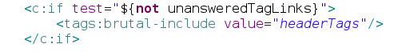
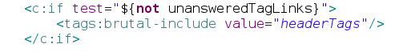

Estudo de Caso: GUJ e Mamute
Fernanda Bernardo e Francisco Sokol


GUJ Velho
13 anos
Começar do zero ou usar Open Source?
GUJ Novo
VRaptor
Jetty
Hibernate
Maven
GIT
Amazon AWS
NGinx
Jenkins
Dois sistemas rodando ao mesmo tempo
Melhorar a forma de deploy
- Automatizado
- Reversível
- Simples
- Zero downtime
Segurança
HTML InjectionOtimização
- Front-End
- Web Page Test
- Performance
- New Relic
Sucesso na comunidade
NÚMEROSDominar o mundo!
Sem boas alternativas open source!
GUJ -> Open Source

Vídeo Como instalar Mamute
Experiências
Clientes Reais
Cobrança para partes customizáveis
Customização
- CSS
- JSP
- Propriedades do Sistema
- Internacionalização
- Conteúdo
- Javascript
- Rotas
CSS
IMAGEM CÓDIGO HEADER.TAGJSP
 

Propriedades do Sistema
IMAGEMInternacionalização Conteúdo
messages.properties
messages_pt_BR.properties
Configuração de locale
Internacionalização das Rotas
Vraptor Routes
Urls Mágicas
Internacionalização de Javascript
GAMBIARRADocumentação
Meta
- Instalar
- Usar
- Customizar
Build
Mais fácil para o usuário
ConfiguraçãoMaven -> Bash -> Ant
Usuário FinalPacote pronto para colocar em produção